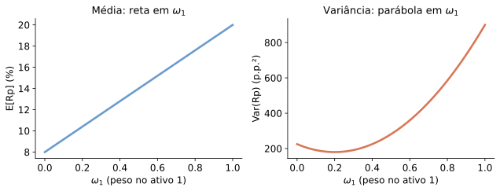
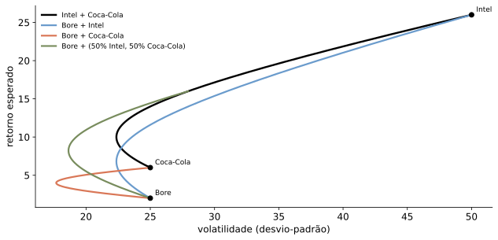

| Estado | πₛ | R₁(s) | R₂(s) | Rp(s), x₁=0,6 |
|---|---|---|---|---|
| 1 | 0,3 | 15,0% | -5,0% | 7,0% |
| 2 | 0,5 | 5,0% | 15,0% | 9,0% |
| 3 | 0,2 | -10,0% | 25,0% | 4,0% |
Revisão: Portfólio e CAPM
Felipe Iachan
Onde estamos
- Já vimos como avaliar títulos, ações e investimentos, sempre descontando fluxos a uma taxa \(r\)
- Hoje: revisão de de onde vem essa taxa — teoria de portfólio e CAPM
- Roteiro: pesos e retorno → risco e diversificação → fronteira eficiente → CAPM → SML
A pergunta
De onde vem a taxa de desconto que usamos para avaliar um investimento arriscado?
Portfólio: pesos
Um portfólio (ou carteira) é uma combinação específica de títulos e valores mobiliários.
Descrevemos um portfólio por seus pesos: a fração do investimento em cada ativo.
\[ x_{i}=\dfrac{\text{Valor do investimento }i}{\text{Valor total do portfólio}} \]
Hipótese: os pesos resumem toda a informação relevante.
Os pesos podem ser negativos
Normalmente os pesos somam 1:
\[ x_{1}+x_{2}+\ldots+x_{n}=1 \]
- Mas veremos casos em que essa soma é zero
- E casos em que alguns pesos são negativos (posições vendidas)
O retorno do portfólio é a média ponderada dos retornos:
\[ R_{p}=\sum_{i=1}^{n}x_{i}R_{i} \]
Exemplo 1: pesos de um portfólio
R$ 100.000 investidos em três ações: 200 ações de A, 1.000 de B, 750 de C.
| Ativo | Quantidade | Preço | Investimento | Peso |
|---|---|---|---|---|
| Ação A | 200 | R$ 50 | R$ 10.000 | 10% |
| Ação B | 1.000 | R$ 60 | R$ 60.000 | 60% |
| Ação C | 750 | R$ 40 | R$ 30.000 | 30% |
| Total | R$ 100.000 | 100% |
Exemplo 2: comprando na margem
Mesmo portfólio, mas com apenas R$ 50.000 de recursos próprios: toma-se R$ 50.000 emprestado (posição vendida no ativo livre de risco).
| Ativo | Investimento | Peso |
|---|---|---|
| Ação A | R$ 10.000 | 20% |
| Ação B | R$ 60.000 | 120% |
| Ação C | R$ 30.000 | 60% |
| Título livre de risco | −R$ 50.000 | −100% |
| Total | R$ 50.000 | 100% |
Peso negativo = posição vendida (tomar emprestado).
Exemplo 3: uma casa financiada
Casa de R$ 500.000, pagando 20% à vista e financiando os 80% restantes.
| Ativo | Investimento | Peso |
|---|---|---|
| Casa | R$ 500.000 | 500% |
| Financiamento | −R$ 400.000 | −400% |
| Total | R$ 100.000 | 100% |
O que acontece com o retorno do seu portfólio se o preço da casa cai 15%?
Exemplo 4: posição comprada e vendida
100 ações de A (comprado) e 200 ações de B (vendido a descoberto).
| Ativo | Quantidade | Preço | Investimento |
|---|---|---|---|
| Ação A | 100 | R$ 50 | R$ 5.000 |
| Ação B | −200 | −R$ 25 | −R$ 5.000 |
| Total | R$ 0 |
Portfólio de valor líquido zero: pesos em % não fazem sentido (denominador zero) — usamos valores em R$.
Motivação: por que formar um portfólio?
- Não conhecemos o melhor ativo de antemão
- Portfólios oferecem diversificação, reduzindo riscos desnecessários
- Podem melhorar o desempenho sem concentrar apostas
- Permitem personalizar o trade-off risco/retorno
Construindo um “bom” portfólio
- O que significa “bom”? As características relevantes são retorno e risco
- Investidores gostam de retorno esperado mais alto
- Investidores não gostam de risco
Retorno do portfólio: uma identidade
- Em cada estado da natureza \(s\), a riqueza final é \(W_{0}\sum_{i}x_{i}\left(1+R_{i}(s)\right)\)
- Logo, estado a estado: \(R_{p}(s)=\sum_{i}x_{i}R_{i}(s)\)
- É uma identidade entre variáveis aleatórias — vale realização por realização, sem usar nenhuma probabilidade.
Retorno esperado: a linearidade é uma consequência
\[ E\left[R_{p}\right]=\sum_{s}\pi_{s}R_{p}(s)=\sum_{s}\pi_{s}\sum_{i}x_{i}R_{i}(s)=\sum_{i}x_{i}\sum_{s}\pi_{s}R_{i}(s)=\sum_{i}x_{i}E\left[R_{i}\right] \]
A troca da ordem das somas é o único passo: \(E[\cdot]\) é linear porque é uma soma ponderada.
No exemplo: \(E[R_1]=5\%\), \(E[R_2]=11\%\), \(E[R_p]=0{,}6\times5\%+0{,}4\times11\%=7,4\%\) — confere com a tabela anterior.
Exemplo de uma linha: R$ 25 mil a 18% e R$ 35 mil a 25%:
\[E[R_p] = 0,4167\times 0{,}18 + 0,5833\times 0{,}25 = 22,1\%\]
Covariância
O produto esperado dos desvios de dois retornos em relação às suas médias:
\[ Cov\left(R_{i},R_{j}\right)=E\left[\left(R_{i}-E(R_{i})\right)\left(R_{j}-E(R_{j})\right)\right] \]
Estimativa a partir de dados históricos:
\[ Cov\left(R_{i},R_{j}\right)=\dfrac{1}{T-1}\sum_{t}\left(R_{i,t}-\overline{R}_{i}\right)\left(R_{j,t}-\overline{R}_{j}\right) \]
- Covariância positiva: os retornos tendem a se mover juntos
- Covariância negativa: tendem a se mover em direções opostas
- Note a bilinearidade — propriedade de produto interno.
Correlação
Mede o risco comum entre duas ações, independente das suas volatilidades:
\[ Corr\left(R_{i},R_{j}\right)=\dfrac{Cov\left(R_{i},R_{j}\right)}{SD\left(R_{i}\right)SD\left(R_{j}\right)} \]

Variância do portfólio: também uma identidade
Centrando a mesma identidade de retornos:
\[ R_{p}-E\left[R_{p}\right]=\sum_{i}x_{i}\left(R_{i}-\mu_{i}\right) \]
\[ Var\left(R_{p}\right)=E\left[\left(\sum_{i}x_{i}(R_{i}-\mu_{i})\right)^{2}\right]=\sum_{i}\sum_{j}x_{i}x_{j}\,E\left[(R_{i}-\mu_{i})(R_{j}-\mu_{j})\right]=\sum_{i}\sum_{j}x_{i}x_{j}\sigma_{ij} \]
- É uma forma quadrática nos pesos — ao contrário da média, que é linear
- \(Var(R_{p})\geq0\) para todo \(x\) porque é uma variância: é exatamente dizer que a matriz \(\left[\sigma_{ij}\right]\) é semidefinida positiva
Média é reta, variância é parábola
\[ SD\left(R_{p}\right)\leq\sum_{i}\left|x_{i}\right|\sigma_{i} \]
Desigualdade triangular para desvios-padrão — vale com igualdade se e só se todos os pares têm \(\rho_{ij}=1\).

Caso especial: pesos iguais
Com \(x_i = 1/n\) para todos os ativos:
\[ Var\left(R_{p}\right)=\frac{1}{n}\times\text{Média das Variâncias}+\frac{n-1}{n}\times\text{Média das Covariâncias} \]
\[ \underset{n\to\infty}{\approx}\ \text{Média das Covariâncias} \]
Para portfólios com muitas ações e pesos iguais, o risco é determinado pela média das covariâncias.
Exemplo numérico: pesos iguais
Desvio-padrão médio das ações: 10% a.m.; correlação média: 0,40. Investindo o mesmo montante em cada ação, qual a variância do portfólio quando \(n\to\infty\)? E se a correlação fosse 0? E 1?
\[Cov\left(R_i,R_j\right) = 0{,}40\times0{,}10\times0{,}10 = 0,004\]
\[\sigma_p \underset{n\to\infty}{\approx} \sqrt{0,004} = 6,3\%\]
Artefato: diversificação e número de ações
SD do portfólio
- n = 1
- n = 10
- n = 30
- n = 100
- n → ∞ (limite)
Benefício da diversificação
Quando \(n\to\infty\), o benefício da diversificação alcança um limite:
- O risco remanescente é o risco sistemático (ou risco de mercado)
- Atribuído a fatores que não podem ser diversificados: crédito, liquidez, ciclos econômicos
- Fornece motivação para modelos de fatores lineares.
Volatilidade de um portfólio geral
Usando a bilinearidade, a volatilidade de uma carteira com pesos arbitrários é:
\[ SD\left(R_{p}\right)=\sum_{i=1}^{n}x_{i}\times SD\left(R_{i}\right)\times Corr\left(R_{i},R_{p}\right) \]
A menos que todos os pares tenham correlação perfeita (\(+1\)):
\[ SD\left(R_{p}\right) < \sum_{i=1}^{n}x_{i}\times SD\left(R_{i}\right) \]
Análise média-variância: objetivo
Suponha que os investidores se importem apenas com o retorno esperado e a variância (ou desvio-padrão) de suas carteiras:
- Retorno esperado mais alto é bom
- Maior variância é ruim
Vamos construir um método para carteiras ótimas.
Exemplo: Intel e Coca-Cola
Ações da Intel e da Coca-Cola, com correlação 0 entre os retornos:
| Ação | Retorno esperado | Volatilidade |
|---|---|---|
| Intel | 26% | 50% |
| Coca-Cola | 6% | 25% |
Dois ativos: fórmulas fechadas
\[ \mu_{p}=x\mu_{1}+(1-x)\mu_{2} \]
\[ \sigma_{p}^{2}=x^{2}\sigma_{1}^{2}+(1-x)^{2}\sigma_{2}^{2}+2x(1-x)\rho\,\sigma_{1}\sigma_{2} \]
- \(\rho=1\): \(\sigma_{p}=\left|x\sigma_{1}+(1-x)\sigma_{2}\right|\) — a fronteira vira uma reta
- \(\rho=-1\): existe \(x\) que zera a variância, em \(x=\dfrac{\sigma_{2}}{\sigma_{1}+\sigma_{2}}\)
- Mínimo de variância em geral: \(x^{*}=\dfrac{\sigma_{2}^{2}-\rho\,\sigma_{1}\sigma_{2}}{\sigma_{1}^{2}+\sigma_{2}^{2}-2\rho\,\sigma_{1}\sigma_{2}}\)
Um portfólio eficiente é aquele em que não há como reduzir a volatilidade sem reduzir o retorno esperado.
Artefato: correlação e fronteira de dois ativos
carteira de variância mínima
- SD nesse ponto
- E[Rp] nesse ponto
Exemplo 2: adicionando uma terceira ação
Considere acrescentar a Bore Industries ao portfólio anterior:
| Ação | Retorno esperado | Volatilidade | Corr. c/ Intel | Corr. c/ Coca-Cola |
|---|---|---|---|---|
| Intel | 26% | 50% | 1,0 | 0,0 |
| Coca-Cola | 6% | 25% | 0,0 | 1,0 |
| Bore Industries | 2% | 25% | 0,0 | 0,0 |
Embora a Bore tenha retorno menor e a mesma volatilidade que a Coca-Cola, ainda pode ser vantajoso incluí-la, pelo benefício de diversificação.
Gráfico: combinando duas em duas

Fronteira eficiente com três ativos

Com venda a descoberto permitida, nenhuma ação isolada está na fronteira eficiente.
Mais ações expandem a fronteira
Cada ativo adicional, se não perfeitamente correlacionado com os demais, amplia as possibilidades de diversificação.
Construção ilustrativa: comparamos a fronteira do nosso próprio exemplo com 2 vs. 3 ativos — não é a figura do livro-texto (que ilustra o mesmo ponto com 10 ações reais).
Fronteira eficiente: definição
- Portfólio eficiente: não há como reduzir a volatilidade sem diminuir o retorno esperado
- No exemplo com 3 ações e venda a descoberto permitida, nenhuma ação isolada está na fronteira
- Sem permitir venda a descoberto, alguma ação pode aparecer na fronteira
Título livre de risco e mercado de ações
- Investir parte da carteira em um ativo livre de risco (ex.: T-Bills) reduz o risco — mas também reduz o retorno esperado
- Um investidor mais agressivo pode tomar emprestado para investir ainda mais na carteira arriscada
Combinando o ativo livre de risco com um portfólio arriscado
Seja \(x\) a fração aplicada num portfólio arriscado \(P\):
\[ E\left(R_{x,p}\right)=r_{f}+x\left[E\left(R_{p}\right)-r_{f}\right] \]
\[ SD\left(R_{x,p}\right)=x\cdot SD\left(R_{p}\right) \]
O desvio-padrão é apenas uma fração da volatilidade da carteira arriscada.
Gráfico: alavancando um portfólio arriscado

\(P\) é um portfólio arriscado qualquer — ainda não necessariamente o melhor. \(r_f\) aqui é um valor ilustrativo (1% a.a.), não um dado do material-fonte.
Identificando a carteira tangente
Para o maior retorno esperado possível em cada nível de risco, buscamos a carteira que gera a reta mais íngreme ao combinar com o ativo livre de risco.
Índice de Sharpe: mede o retorno por unidade de risco.
\[ Sharpe = \dfrac{E\left[R_{P}\right]-r_{f}}{SD\left(R_{P}\right)} \]
A carteira tangente é a de maior índice de Sharpe possível: onde a reta com o ativo livre de risco tangencia a fronteira eficiente.
Artefato: carteira tangente e CML
carteira tangente (M)
- Intel
- Coca-Cola
- Bore Industries
- E[R_M]
- SD(R_M)
Na presença de um ativo livre de risco
- Todos os investidores deveriam ter a mesma composição na parte arriscada da carteira
- Portfólios eficientes são combinações do ativo livre de risco com a carteira única de ações — a carteira tangente (Harry Markowitz)
- A fronteira eficiente se torna uma linha reta
A escolha do investidor
As preferências determinam apenas quanto investir na carteira tangente versus no ativo livre de risco:
- Investidores mais avessos ao risco: pequena parcela na carteira tangente
- Investidores menos avessos: maior parcela (ou alavancagem) na carteira tangente
- Ambos mantêm a mesma carteira arriscada — a carteira tangente
Lembrando: o que vimos até aqui
- Análise média-variância: o risco de um portfólio depende essencialmente das covariâncias, pouco das volatilidades individuais
- Diversificação reduz risco — mas não o risco sistemático
- Fronteira eficiente de ativos arriscados + fronteira eficiente com o ativo livre de risco
- Carteira tangente \(M\): maior retorno esperado por unidade de risco; todo investidor aplica uma parcela nela
Aumentando o Sharpe de \(P\): uma perturbação
Um investidor com portfólio arriscado \(P\) toma \(\varepsilon\) emprestado à taxa \(r_{f}\) e investe em \(i\):
\[ R(\varepsilon)=R_{P}+\varepsilon\left(R_{i}-r_{f}\right) \]
\[ \mu(\varepsilon)=\mu_{P}+\varepsilon\left(\mu_{i}-r_{f}\right)\quad\Rightarrow\quad \dfrac{d\mu}{d\varepsilon}=\mu_{i}-r_{f} \]
\[ \sigma^{2}(\varepsilon)=\sigma_{P}^{2}+2\varepsilon\,Cov\left(R_{i},R_{P}\right)+\varepsilon^{2}\sigma_{i}^{2}\quad\Rightarrow\quad \left.\dfrac{d\sigma}{d\varepsilon}\right|_{\varepsilon=0}=\dfrac{Cov\left(R_{i},R_{P}\right)}{\sigma_{P}}=\sigma_{i}\rho_{iP} \]
Essa derivada prova o que usamos a seguir: perto de \(\varepsilon=0\), a volatilidade sobe apenas pelo risco de \(i\) comum a \(P\) — o resto é diversificado.
Sharpe marginal
\[ S(\varepsilon)=\dfrac{\mu(\varepsilon)-r_{f}}{\sigma(\varepsilon)}\qquad\Rightarrow\qquad S'(0)=\dfrac{\left(\mu_{i}-r_{f}\right)-S_{P}\cdot\sigma_{i}\rho_{iP}}{\sigma_{P}} \]
- \(S'(0)>0 \iff \mu_{i}-r_{f}>S_{P}\cdot\sigma_{i}\rho_{iP}\)
- O “Sharpe marginal” de \(i\) supera o de \(P\): aumentar \(\varepsilon\) a partir de zero melhora o Sharpe de \(P\).
Beta e a condição de Sharpe máximo
Como \(\varepsilon\) pode ser negativo (vender \(i\)), \(P\) só tem Sharpe máximo se \(S'(0)=0\) para todo \(i\):
\[ \mu_{i}-r_{f}=\beta_{i}^{P}\left(\mu_{P}-r_{f}\right),\qquad \beta_{i}^{P}\equiv\dfrac{Cov\left(R_{i},R_{P}\right)}{\sigma_{P}^{2}}=\dfrac{\sigma_{i}\rho_{iP}}{\sigma_{P}} \]
- Checagens de consistência: \(\beta_{P}^{P}=1\); \(\sum_{i}x_{i}\beta_{i}^{P}=1\) (bilinearidade da covariância)
O lado direito é o retorno exigido: o retorno necessário para compensar o risco que \(i\) acrescenta a \(P\).
Artefato: Sharpe marginal e SML
- βi (em relação a P)
- αi
- S'(0)
αi > 0 ⇔ S'(0) > 0 ⇔ vale comprar i; αi = 0 coloca i exatamente na SML e a tangente em ε=0 fica horizontal.
Portfólio eficiente e retorno exigido
Sem restrições à negociação: um portfólio é eficiente se e somente se o retorno esperado de cada título disponível é igual ao seu retorno exigido.
\[ E\left[R_{i}\right]=r_{i}\equiv r_{f}+\beta_{i}^{eff}\left(E\left[R_{eff}\right]-r_{f}\right) \]
Resultado: o prêmio de risco de qualquer investimento vem do seu beta em relação ao portfólio eficiente. A demonstração de que essa condição vale para todos os \(i\) simultaneamente está no apêndice.
O portfólio eficiente como benchmark de risco sistemático
O portfólio eficiente (tangente) é o padrão que separa, em qualquer ativo, o risco sistemático do idiossincrático:
\[ SD(R_i)^2 = \underbrace{\left(\beta_i^{eff}\right)^2 SD(R_{eff})^2}_{\text{risco sistemático}} + \text{risco idiossincrático (diversificável)} \]
Decomposição da volatilidade: sistemático vs. idiossincrático

Só o risco correlacionado com o portfólio eficiente é precificado; o resto pode ser diversificado.
CAPM: motivação
- Identificado o portfólio eficiente, calculamos o retorno esperado de qualquer título pelo seu beta
- Dificuldade prática: precisaríamos conhecer retornos esperados, volatilidades e correlações de tudo
- Abordagem CAPM: identifica o portfólio eficiente sem exigir isso — usa as escolhas ótimas dos investidores para concluir que ele é o portfólio de mercado
CAPM: as três hipóteses
- Investidores negociam a preços de mercado competitivos (sem impostos/custos de transação) e podem emprestar/tomar emprestado à taxa livre de risco
- Investidores mantêm apenas portfólios eficientes de títulos negociados
- Investidores têm expectativas homogêneas sobre volatilidades, correlações e retornos esperados
CAPM: por que a carteira tangente é a carteira de mercado
- Expectativas homogêneas \(\Rightarrow\) todos os investidores demandam a mesma carteira eficiente de ativos arriscados
- A demanda por títulos deve igualar a oferta
- A carteira combinada de todos os investidores deve ser a carteira eficiente \(\Rightarrow\) é a carteira de mercado
Portanto, a carteira tangente \(M\) é a carteira de mercado.
Portfólio ótimo e a CML
- Sob as hipóteses do CAPM, o portfólio ótimo é sempre uma combinação do ativo livre de risco com o portfólio de mercado
- A reta tangente que passa pelo mercado é a Linha do Mercado de Capitais (CML)
- Todo portfólio ótimo está na CML
A CML: retorno esperado de qualquer carteira eficiente
Seja \(C\) uma carteira na CML e \(x\) a fração aplicada no mercado \(M\):
\[ E\left[R_{C}\right]=r_{f}+x\left(E\left[R_{M}\right]-r_{f}\right)\qquad SD\left[R_{C}\right]=x\,SD\left[R_{M}\right] \]
Logo, para qualquer carteira eficiente:
\[ E\left[R_{C}\right]=r_{f}+\dfrac{SD\left[R_{C}\right]}{SD\left[R_{M}\right]}\left(E\left[R_{M}\right]-r_{f}\right) \]
A CML e a escolha ótima do investidor
- Curvas de utilidade representam as preferências do investidor entre risco e retorno
- A escolha ótima se restringe à CML; a posição na reta reflete a aversão a risco

Determinando o prêmio de risco
Dado um portfólio de mercado eficiente, o retorno esperado de qualquer investimento é:
\[ E\left[R_{i}\right]=r_{f}+\beta_{i}^{M}\left(E\left[R_{M}\right]-r_{f}\right) \]
O beta é definido como:
\[ \beta_{i}^{M}\equiv\beta_{i}=\dfrac{SD\left(R_{i}\right)\times Corr\left(R_{i},R_{M}\right)}{SD\left(R_{M}\right)}=\dfrac{Cov\left(R_{i},R_{M}\right)}{Var\left(R_{M}\right)} \]
Exemplo: beta no nosso exemplo
Tratando a carteira tangente como carteira de mercado (\(r_f=\) 1,0\\\\%):
| Ação | Retorno esperado | Beta |
|---|---|---|
| Intel | 26,0% | 1,68 |
| Coca-Cola | 6,0% | 0,34 |
| Bore Industries | 2,0% | 0,07 |
Carteira de mercado: \(E[R_M] = 15,9\%\), \(SD(R_M) = 27,6\%\).
Gráfico: a Linha de Mercado de Títulos (SML)

Sob as hipóteses do CAPM, todo ativo cai exatamente sobre a SML.
Linha de Mercado de Títulos: casos especiais
\[ \beta_{i}=1 \Rightarrow E[R_{i}]=E[R_{M}] \]
\[ \beta_{i}=0 \Rightarrow E[R_{i}]=r_{f} \]
\[ \beta_{i}<0 \Rightarrow E[R_{i}]<r_{f}\quad\text{(por quê?)} \]
Beta de um portfólio
O beta de um portfólio é a média ponderada dos betas dos títulos que o compõem:
\[ \beta_{P}=\dfrac{Cov\left(R_{P},R_{Mkt}\right)}{Var\left(R_{Mkt}\right)}=\sum_{i}x_{i}\dfrac{Cov\left(R_{i},R_{Mkt}\right)}{Var\left(R_{Mkt}\right)}=\sum_{i}x_{i}\beta_{i} \]
Novamente, a bilinearidade da covariância.
Alfa de um portfólio
Para aprimorar o desempenho da carteira, comparamos o retorno esperado de cada título com seu retorno exigido pela SML.
- Quando a carteira de mercado é eficiente, todo ativo está sobre a SML e tem alfa igual a zero
- Um alfa diferente de zero identifica uma oportunidade de melhorar a carteira, aumentando o índice de Sharpe (o mesmo raciocínio de “Sharpe marginal” de alguns slides atrás)
O que aprendemos
- Diversificação reduz o risco idiossincrático — não o risco sistemático
- Fronteira eficiente + ativo livre de risco \(\Rightarrow\) CML: toda carteira ótima combina o ativo livre de risco com a carteira tangente
- No CAPM, a carteira tangente é o portfólio de mercado; o beta mede o risco que importa, e a SML dá o retorno exigido
- Próxima aula: de onde vem o prêmio de risco — risco e preços em finanças
Apêndice: carteira tangente via Lagrangeano
Problema: maximizar \(\sum_{i}w_{i}\left(\mu_{i}-r_{f}\right)\) sujeito a \(\sum_{i}\sum_{j}w_{i}w_{j}\sigma_{ij}=\bar\sigma^{2}\).
\[ L=\sum_{i}w_{i}\left(\mu_{i}-r_{f}\right)-\dfrac{\lambda}{2}\left(\sum_{i}\sum_{j}w_{i}w_{j}\sigma_{ij}-\bar\sigma^{2}\right) \]
CPO para cada \(k\):
\[ \mu_{k}-r_{f}=\lambda\sum_{j}\sigma_{kj}w_{j}=\lambda\,Cov\left(R_{k},R_{w}\right) \]
Apêndice: da CPO ao beta
Multiplicando por \(w_{k}\) e somando em \(k\):
\[ \mu_{w}-r_{f}=\lambda\sigma_{w}^{2}\quad\Rightarrow\quad \lambda=\dfrac{\mu_{w}-r_{f}}{\sigma_{w}^{2}} \]
Substituindo de volta, para todo \(k\):
\[ \mu_{k}-r_{f}=\dfrac{Cov\left(R_{k},R_{w}\right)}{\sigma_{w}^{2}}\left(\mu_{w}-r_{f}\right)=\beta_{k}^{w}\left(\mu_{w}-r_{f}\right) \]
- A CPO é um sistema linear, \(\sum_{j}\sigma_{kj}w_{j}\propto\mu_{k}-r_{f}\) — é assim que o artefato da carteira tangente resolve e normaliza os pesos
- No exemplo da aula as correlações são nulas, logo \(w_{i}\propto\left(\mu_{i}-r_{f}\right)/\sigma_{i}^{2}\), o que dá 51,0% / 40,8% / 8,2% com \(r_{f}=1\%\)
- A mesma condição sai de maximizar o Sharpe diretamente, pois o Sharpe é homogêneo de grau zero em \(w\)